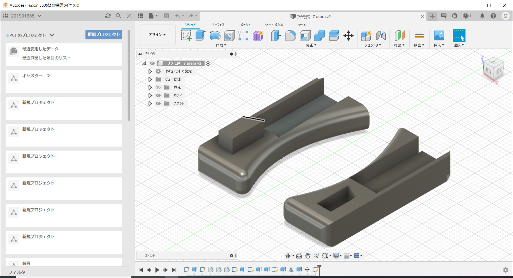

<h1><font size="5">更新　熊手作成２</font></h1><br>

</img><br><br>

<font size="3">持ち手部分と先端部分の欠損対策のためにプラモデルのパーツのように、嵌め込んで作れる<br></font>
<font size="3">設計を試してみました。</font>

</img><br><br>

</img><br><br>
<font size="3">片手で撮影しながらで上手く引っかけれてはいませんが強度、持ちやすさの課題はクリアできました。</font>
<br><font size="3">はめ込み式の利点として先端の交換や、拡張性の向上に期待できます。</font>